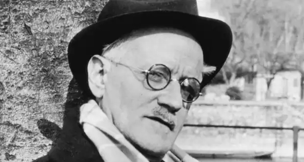
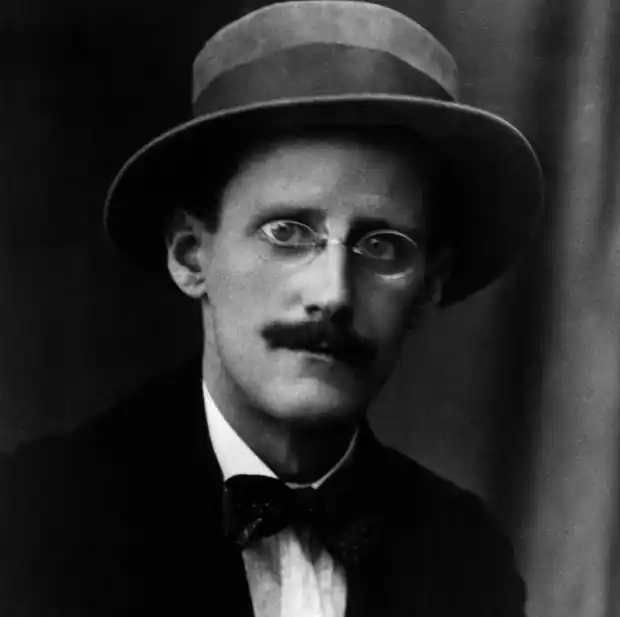
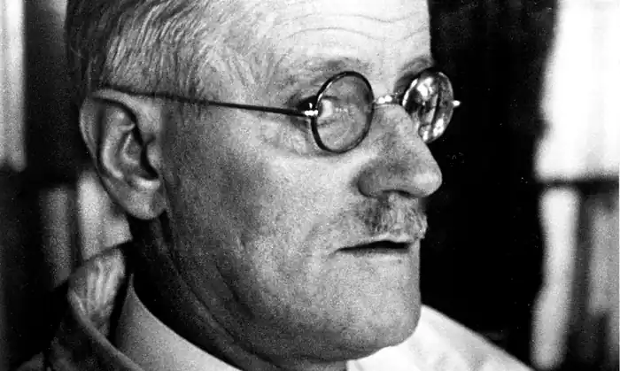

ДЖЕЙМС ДЖОЙС
(1882-1941)
Прізвище Джойс в перекладі з французької — радісний; і тому письменник, який дивився в корінь будь-якого слова, вважав своїми однойменцями французького герцога де Жуайє, а також австрійського доктора Фрейда. В Ірландії вважають, що всі Джойси країни готові палко відстоювати свою спорідненість з древнім і родовитим кланом Джойсів із західного графства Голуей. Герб голуейських Джойсів красувався на стіні в рамці, і в романі батько героя — копія батька автора — гордо описує його як "наш герб". Сімейство було буржуазним, середніх статків, і чоловіки його займалися, переважно, виноторгівлею. Розорившись на цьому фамільному поприщі, Джон Станіслаус Джойс поліпшив справи на іншому шляху, діставши хлібну й легку посаду збирача податків. Тоді ж таки — а це був 1880-й рік — він одружився із юною чарівною дівчиною Мей Меррі, їхній другий син, котрий народився другого лютого 1882 року, ввійшов в історію світової літератури, як Джеймс Августін Алоїзій Джойс. Неабиякий інтерес для дослідників "темних сторін" любові становить життя і творчість знаменитого британського письменника ірландського походження Джеймса Джойса (1882-1941), автора блискучих і малозрозумілих романів "Улісс", "Портрет художника в юності", "Дублінці". Сором'язливий юнак Джеймс Джойс ніколи не дозволяв собі жодної лайки в присутності жінок, але у своїх творах доходив до глибин грубої брутальності та нестримних сексуальних фантазій. Його шедевр, роман "Улісс", у 1920 році був заборонений у США і Великобританії за непристойність і залишався під цензурною забороною аж до середини 30-х років. Дитинство та юність письменника припали на бурхливий період в історії його батьківщини. В Ірландії точилася боротьба за незалежність від Англії. Політичні конфлікти перепліталися з релігійними конфліктами як у самій країні, так і в родині Джойсів. Мати Джеймса мріяла, що син стане правовірним католиком, його віддали в єзуїтський коледж Отримана в шкільні роки гуманітарна освіта допомогла юнакові вступити до Дублінського-університету, де він обрав своєю спеціальністю мови й продовжував вивчати філософію. Основною сферою юнацьких інтересів Джойса став театр, котрий відігравав важливу роль у житті Ірландії. Театрові та драматургії присвячена стаття молодого Джойса "Драма і життя". Захоплення театром підштовхнуло Джойса випробувати свої сили у драматургії. Влітку 1900 року він пише п'єсу "Блискуча кар'єра", рукопис не зберігся, але п'єса була написана під впливом Ібсена. Через рік він перекладає дві драми Гауптмана. Гауптман та Ібсен становили епоху в його житті. Водночас він також захоплювався схоластичною філософією, Ніцше, Шопегауером, французькими символістами (Верлен), театром Метерлінка, англійським естетизмом. У юності Джойс часто блукав "Нічним містом". Так у Дубліні називався район, де були зосереджені будинки розпусти. У "Нічному місті" Джойс і "став мужчиною" у чотирнадцятирічному віці. Коли йому виповнилося двадцять років, він поклав собі ніколи більше не мати сексуальних стосунків з повіями, заявивши, що відтепер буде кохатися лише з тією жінкою, у якої "є душа". Проста дівчина Нора Барнакл, "жінка з душею", що її він обрав, залишалася з ним до кінця життя. Вона стала саме тією жінкою долі, про зустріч з якою Джойс написав: "То був перший випадок, коли я не заплатив грошей за любов"... Той день, коли вони вперше "були разом", а саме 16 червня 1904 року, перетворився на нескінченний і метафорично розтягнутий на всю історію людства день, описові якого присвячений величезний роман "Улісс". Цей день дотепер відзначається в Ірландії урочистим карнавальним шестям по Дубліну," джойсівськими місцями". Та пам'ятна дата у шанувальників Джойса набула навіть власне ім'я: "Bloomsday", за іменами двох головних персонажів епохального роману Леопольда Блюма та Моллі Блюм. І все-таки Нора залишалася вірною Джойсу упродовж усього їхнього тривалого спільного життя, хоча іноді й і зізнавалася друзям, що Джойс хотів, "щоб вона зраджувала його з іншими чоловіками, щоб йому було про що писати". Джойс справді прожив важке життя і ніколи не був святенником, але його словесне зображення сексу, мабуть, не перевершив досі жоден письменник XX століття. Джойс поклав собі присвятити життя мистецтву. У 1902 році він поїхав до Парижа, де цілий рік знайомився з новими творами європейської літератури. У зв'язку зі смертю матері через рік він повернувся до Дубліна, де й відбулось його знайомство з Норою Барнакл. Немає сумнівів, що Джеймс Джойс, найблискучіший ліричний письменник із Дубліна (родом із Дубліна були також інші знамениті англійські літератори — Оскар Уайльд, Айріс Мердок і Джонатан Свіфт,— але тільки для Джойса Дублін виступав обов'язковим літературним персонажем), страждав від неможливості урізноманітнити своє життя, зокрема й сексуальне Він не мав, очевидно, ніяких гомосексуальних нахилів, однак прагнув до незвичайного самоствердження через секс. Будучи сором'язливим, Джойс змушений був користатися послугами продажних жінок. А це, як відомо, вимагає чималих коштів. Коли почалась Перша світова війна, Джойс переїхав до Цюріха, там він почав роботу над "Уліссом". Він отримав кошти від Королівського Літературного фонду. Це дало змогу працювати над романом. Але в 1921 році, дуже потерпаючи від злиднів, Джойс продав рукопис свого головного роману "Улісс" американському мільйонеру. Простежується зв'язок роману з "Одіссеєю" Гомера. Кожен з його 18 епізодів пов'язаний з певним епізодом з "Одіссеї". Зв'язок помітний у сюжетних, тематичних або смислових паралелях, а також у тому, що більшість персонажів роману мають прототипи з поем Гомера: Блюм — Одиссей, Стівен — Телемак, Моллі Блюм — Пенелопа, Белла Коен — Цирцея і т.д. Також визначним є те, що в "Уліссі" простежується тісний, з багатьма подробицями, зв'язок роману з місцем його дії. Джойс працював із довідником "Весь Дублін на 1904 рік". Все, що відбувається у романі, супроводжується детальною вказівкою місця дії, не тільки вулиць, але навіть вуличної архітектури та інших деталей. Автор стверджував, що з кожним епізодом якимось чином пов'язаний певний орган людського тіла, а також певна наука або мистецтво, якийсь символ чи колір. Тлумачення, що мають в своїй основі потік свідомості, близькі до психоаналітичних інтерпретацій, що твердять, буцімто в "Уліссі" Джойс іде слідом за Фрейдом і робить аналіз підсвідомості, розкриваючи її фобії та комплекси за фрейдистськими рецептами. Як певну варіацію в нього знаходили прийом "реалізації підсвідомого", тобто зображення під виглядом реальності втілених, ожилих фантазій підсвідомості. У двадцяті роки психоаналіз досяг піку своєї популярності, і поява подібних інтерпретацій була неминучою, попри навіть те, що автор "Улісса" не раз відсторонювався від цього методу й висміював його, іменуючи Фрейда та Юнга "австрійським Шалтаєм і швейцарським Бовтаєм". Усупереч всім ядучим дотешімо Джойса, у його прозі все-таки простежуються незаперечні зближення з психоаналітичним напрямком. Основний зв'язок простий: як Джойс, так і психоаналітики прагнуть проникнути в роботу підсвідомості набагато глибше, пильніше, мікроскопічніше, аніж це досі робила література; однак підхід Джойса до цього завдання — тут він цілком правий — не належить Фрейдові чи Юнгу, а є цілком самостійним. Безперечно також, що в романі використовується і техніка "реалізації підсвідомого", і авторові не раз доводилось визнавати це. Далі, проникаючи в підсвідомість, Джойс виявляє там дуже багато такого, що знаходить і психоаналіз (і що не бажає знати колишній, себто "здоровий" погляд на внутрішній світ людини): патології повсякденної свідомості, страхи, сексуальні збочення. Цю спільноту психологічних відкриттів визнав сам Юнг, який читав "Улісса" з ретельністю, "кричав, лаявся і захоплювався", за його власними словами, і визнав, зокрема, монолог Моллі "низкою щирих психологічних перлин". Що ж до Фрейда, то досить вказати на основний момент: як би не відрізнялися підходи, але вже сама тема батьківства як нерозривного, але й хворобливого зв'язку, амбівалентної симпатії-антипатії батька й сина,— важливе зближення Джойса з відразливим "Шалтаєм". Навпаки, спорідненість з Гомером завжди визнавалося із задоволенням. З усіх ранніх односторонніх чи, точніше, моноідейних тлумачень роману авторові найбільше імпонувало саме міфологічне, представлене вперше у виступах і статтях Ларбо, а також у згаданому есе Еліота ""Улісс", порядок і міф". Одночасно з появою скороспішних моноідейних тлумачень роману, поволі готувався ґрунт для наступного етапу, коли його сприйняття почало нарешті наближатися до адекватного. Для цього було необхідно насамперед представити цілісний образ роману, включаючи всі сторони його задуму — і композицію, і міфологічні паралелі, і техніку, і ідеї. Будь-який новий читач швидко усвідомлював, як багато в "Уліссі" прихованого, що не лежить на поверхні, виходячи з глибинних трактуваннь. Роман буяв загадками усіх видів і всіх масштабів, від крихітних до найбільших, і без допомоги автора їхня розгадка перетворилася б на працю нескінченну і безнадійну. За роз'ясненнями щодо "Улісса" до Джойса почали звертатися ще до виходу книги, однак письменник досить скупо дозував їх, висловивши причину цього типовим джойсівським напівжартом: "Якщо усе сказати відразу, я утрачу своє безсмертя". Зі сказаного добре видно, що розумові Джойса були завжди притаманні деякі глибинні риси, інваріантні властивості, що, хоча і виявлялися по-різному на різних етапах, однак, незмінно відштовхували його від всіх розумових ілюзій, вимислів і фантазій, від будь-якого алогізму й сваволі в мисленні. І, навпаки, наближували до суворої дисципліни, логічності міркувань, відмові від всього недодуманого й тьмяного. Його пізні тексти, знамениті дивацтвами і туманністю, вивірені до останньої крапки. "Улісс" викликав у нього єдиний сумнів: "Чи не зробив я його занадто систематичним?"; а про "Поминки по Фіннегану" було сказано з вистражданою впевненістю: "Я можу виправдати кожен рядок у цій книзі". За цими рисами художника викреслимо, у свою чергу, певне спільне джерело, спільний знаменник: те, що його друг-супротивник Гогарті-Малліган називає в романі "єзуїтською закваскою".